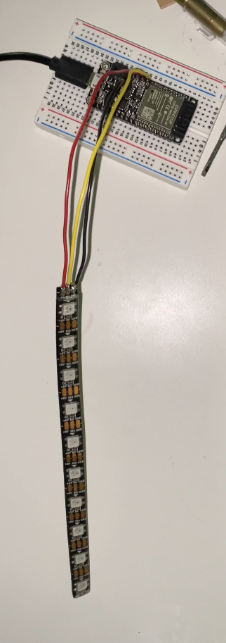

Our assignment this week is to control our Huzzah32 board from a local wireless network. When I was working on this assignment, I still wasn't sure how to go by with my final project. I was debating with myself on whether it should work wirelessly or not. So instead, I used this opportunity to use our LED strips which were provided by our kits. I was eager to work on this because the LED strip is my favorite output device. I find it mesmerizing!
I built a 5v circuit and connected the LED strip to pin 13 on my Huzzah board. I followed Nathan's Firebase tutorial (I find this the most useful tutorial. I've practiced on it so many times), added the NeoPixel library, and replaced all the LED light coding with the LED strip coding we were introduced to in week 8.
That code is supposed to make the LED strip lights shine a bright green one after the other after pressing the "ON" button in Firebase.
It's mostly functional, but I was surprised to see the LED strip acting bizarrely. No matter how I changed the code, the "OFF" button wouldn't actually turn off and clear the LED lights. It would just stay still. Maybe shine the first light a little brigher for a few seconds before going back to normal. And before pressing the "ON" button, parts of the LED would flash colors other than green. It showed red, it showed purple, it showed blue, and it showed pink sometimes. It didn't flash these colors for too long, but I still find it weird. There's nothing in the code that tells the LED light to shine any color other than green. I tried doing a little research to discover why this happens, but all I could find were troubleshooting color problems like dimming lights, missing primary colors, and other issues I haven't really faced. I might've found something pretty close to my problem, though. I found a PDF file explaining that some users experience color shifts at the END of the strip sometimes because of insufficient power. This didn't make sense, though. I always connected my LED strip to the USB pin on my Huzzah board and it seemed to work just fine. This proves that the problem has to be with the code, I just haven't pinpointed the exact fault yet.
But on the bright side, pressing the "ON" button seemed to get it to work the way I intended it to.
I still wonder why I faced these problems. I've only faced such obvious problems in Firebase with LED strips. I find that really interesting.